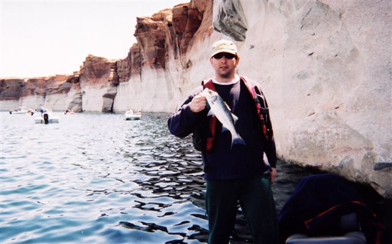
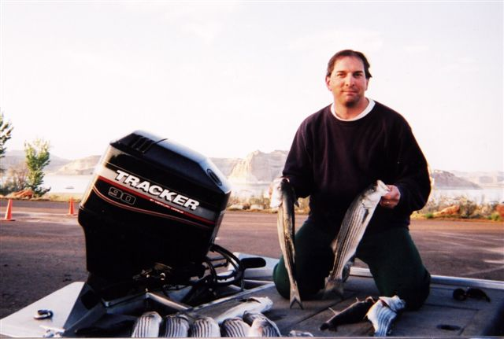
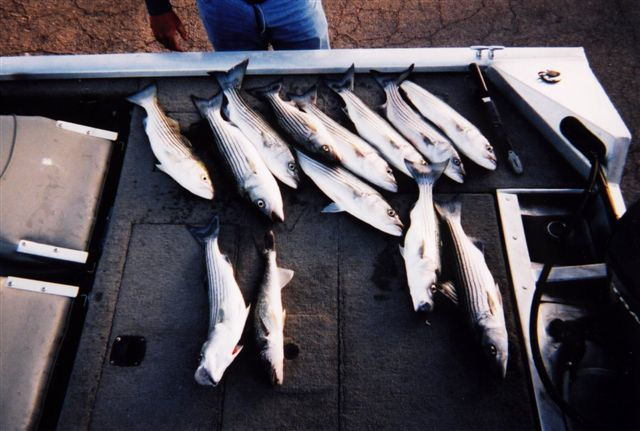

Lake Powell, April 12-13 2001
The story is goes like this...
Zoom to the spot ...
Catch a fish, take photo as evidence for our skeptical fellow coners ...

Catch rest of fish (no photos) until the end of day cleaning ...

